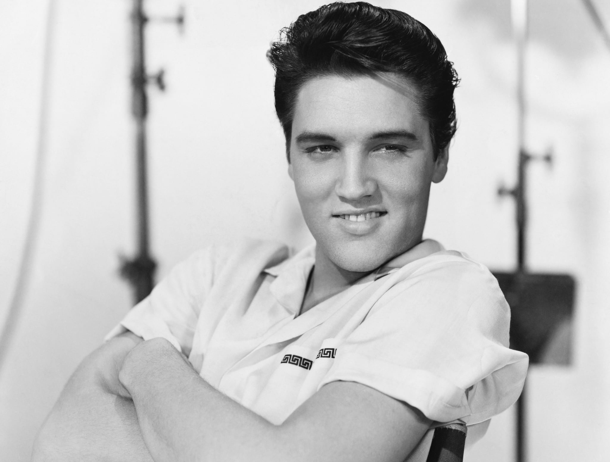

Michael Joseph Jackson (lahir di Gary, Indiana, Amerika Serikat, 29 Agustus 1958 – meninggal di Los Angeles, California, Amerika Serikat, 25 Juni 2009 pada umur 50 tahun)[2] adalah seorang penyanyi dan penulis lagu dari Amerika Serikat. Ia terkenal sebagai the "King of Pop" dan memopulerkan gerakan dansa "Moonwalk" yang telah menjadi ciri khasnya.
Elvis Aaron Presley (lahir di Tupelo, Mississippi, Amerika Serikat, 8 Januari 1935 – meninggal di Memphis, Tennessee, Amerika Serikat, 16 Agustus 1977 pada umur 42 tahun) adalah seorang penyanyi sekaligus penulis lagu dan pemeran Amerika. Dianggap sebagai salah satu ikon kebudayaan paling berpengaruh pada abad ke-20, ia sering disebut dengan sebutan "King of Rock and Roll" atau singkatnya "the King".

Mariah Carey (lahir 27 Maret 1969[2] atau 1970[3]) adalah seorang penyanyi, penulis dan pencipta lagu, produser rekaman, dan aktris asal Amerika Serikat. Mariah disebut sebagai "Songbird Supreme" oleh Guinness World Records, ia terkenal dengan jangkauan vokalnya yang mencapai lima oktaf, gaya melisma, dan penggunaan teknik whistle register (jangkauan suara manusia tertinggi di atas falsetto).
John Winston Lennon (lahir di Liverpool, Inggris, 9 Oktober 1940 – meninggal di New York City, Amerika Serikat, 8 Desember 1980 pada umur 40 tahun) paling dikenal sebagai penyanyi, pencipta lagu, instrumentalis, penulis, dan aktivis politik yang terkenal di seluruh dunia sebagai pemimpin dari The Beatles. Lennon dan Paul McCartney membentuk partnership pencipta lagu yang paling sukses dan berhasil hingga saat ini. Lennon dengan sinismenya dan McCartney dengan optimismenya melengkapi satu sama lain dengan sangat baik.